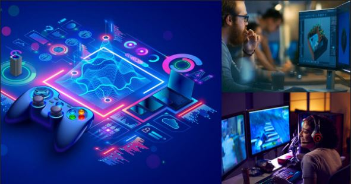
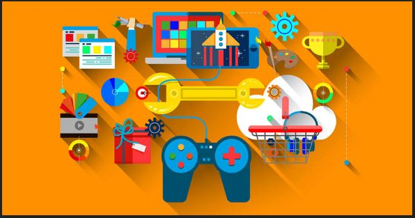
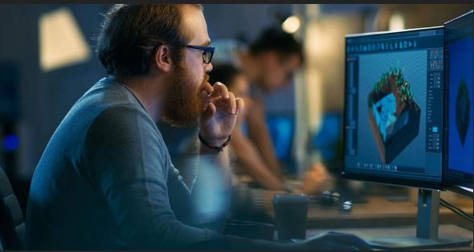
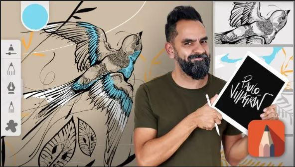
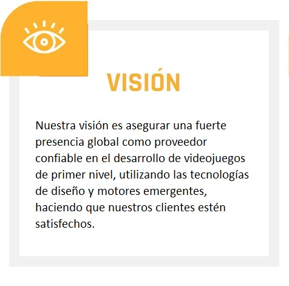
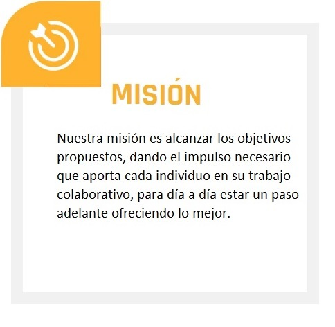
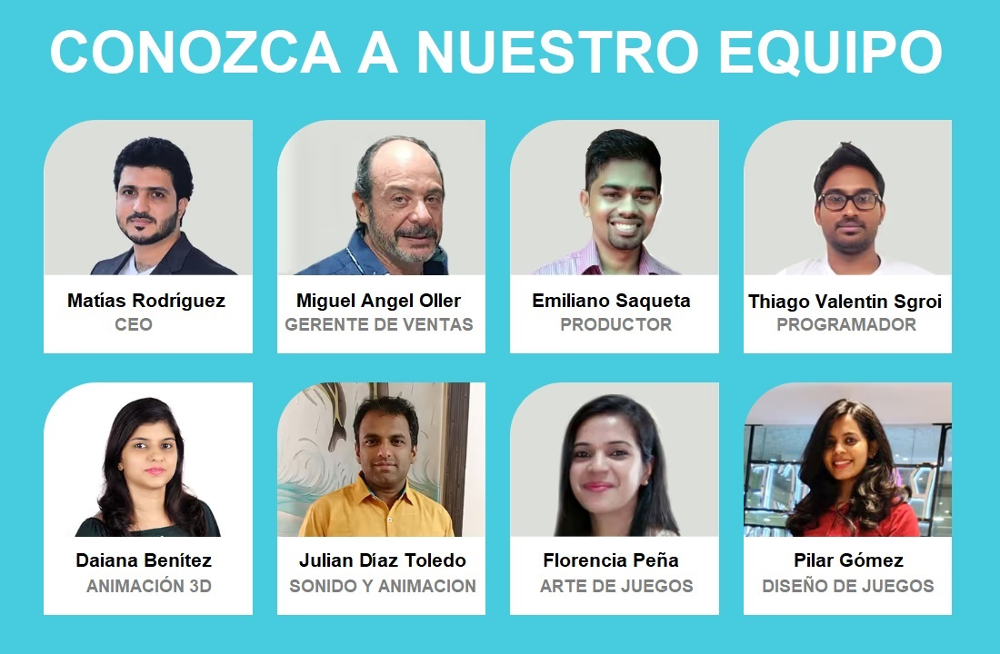

A través de los años, los videojuegos han pasado de ser un simple pasatiempo hasta convertirse en una industria que tan sólo en 2022, generó $180.000 millones de dólares en todo el mundo.

Al igual que cualquier proyecto audiovisual, el desarrollo de videojuegos inicia con la presentación de una idea, ya sea ante productores, inversionistas o un estudio.

El equipo creativo y técnico se encarga de crear una versión preliminar del juego, conocida como “prueba de concepto”. Básicamente es aquí donde se vé de manera práctica si el juego funciona.

Si todo sale bien con la prueba de concepto, entonces la producción arranca. Se establecen todos los departamentos y puestos necesarios para trabajar en el proyecto: desde artistas hasta programadores.


